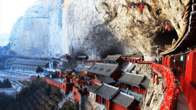
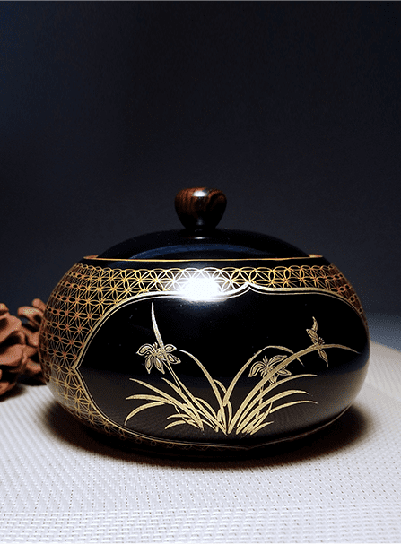

清凉盛夏 康养山西
“潮”创意折射出对文化发展历史与现实的理性定位，对传统文化的礼敬与自豪，对当下文化发展道路的清晰与自觉“潮”创意折射出对文化发展历史与现实的理性定位，对传统文化的礼敬与自豪，对当下文化发展道路的清晰与自觉“潮”创意折射出对文化发展历史与现实的理性定位，对传统文化的礼敬与自豪，对当下文化发展道路的清晰与自觉【详情】
夏·养·山·西
提示的文字
五台山
故宫的“潮”创意折射出对文化发展历史与现实的理性定位，对传统文化的礼敬与自豪，对当下文化发展道路的清晰与自觉
提示的文字
五台山2
2故宫的“潮”创意折射出对文化发展历史与现实的理性定位，对传统文化的礼敬与自豪，对当下文化发展道路的清晰与自觉
提示的文字
五台山3
2故宫的“潮”创意折射出对文化发展历史与现实的理性定位，对传统文化的礼敬与自豪，对当下文化发展道路的清晰与自觉
提示的文字
五台山4
2故宫的“潮”创意折射出对文化发展历史与现实的理性定位，对传统文化的礼敬与自豪，对当下文化发展道路的清晰与自觉
提示的文字
五台山5
2故宫的“潮”创意折射出对文化发展历史与现实的理性定位，对传统文化的礼敬与自豪，对当下文化发展道路的清晰与自觉
提示的文字
五台山6
2故宫的“潮”创意折射出对文化发展历史与现实的理性定位，对传统文化的礼敬与自豪，对当下文化发展道路的清晰与自觉
提示的文字
五台山7
2故宫的“潮”创意折射出对文化发展历史与现实的理性定位，对传统文化的礼敬与自豪，对当下文化发展道路的清晰与自觉
2故宫的“潮”创意折射出对文化发展历史与现实的理性定位，对传统文化的礼敬与自豪，对当下文化发展道路的清晰与自觉
五台山
1/7


山·西·三·宝
平遥推光漆
平遥推光漆平遥推光漆平遥推光漆平遥推光漆平遥推光漆
高平珐华器
平遥推光漆平遥推光漆平遥推光漆平遥推光漆平遥推光漆
新绛澄泥砚
平遥推光漆平遥推光漆平遥推光漆平遥推光漆平遥推光漆
最·美·山·西
 1.舞蹈演员们现场表演以“惠安女”为原型的群体舞蹈。（摄影：陈嘉姚）
1.舞蹈演员们现场表演以“惠安女”为原型的群体舞蹈。（摄影：陈嘉姚） 2.舞蹈演员们现场表演以“惠安女”为原型的群体舞蹈。（摄影：陈嘉姚）
2.舞蹈演员们现场表演以“惠安女”为原型的群体舞蹈。（摄影：陈嘉姚） 3.舞蹈演员们现场表演以“惠安女”为原型的群体舞蹈。（摄影：陈嘉姚）
3.舞蹈演员们现场表演以“惠安女”为原型的群体舞蹈。（摄影：陈嘉姚）人 民 网 版 权 所 有 ，未 经 书 面 授 权 禁 止 使 用
Copyright © 1997-2020 by www.people.com.cn. all rights reserved
Copyright © 1997-2020 by www.people.com.cn. all rights reserved